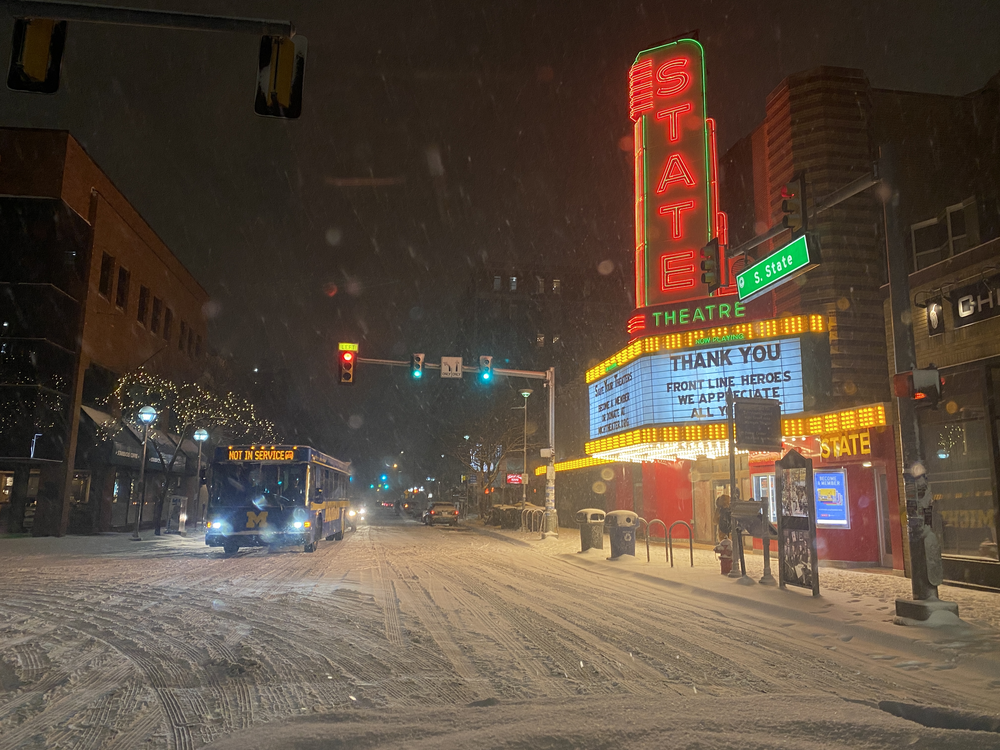
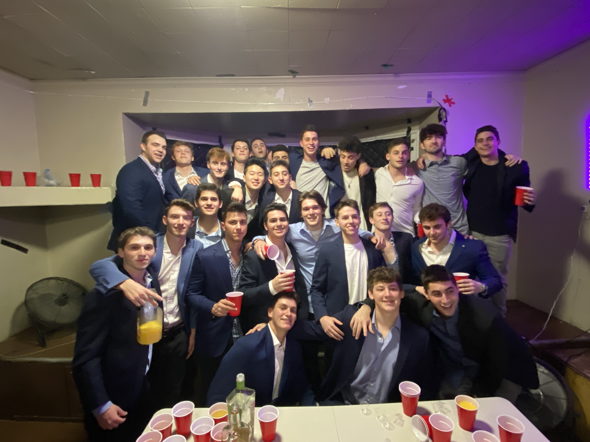
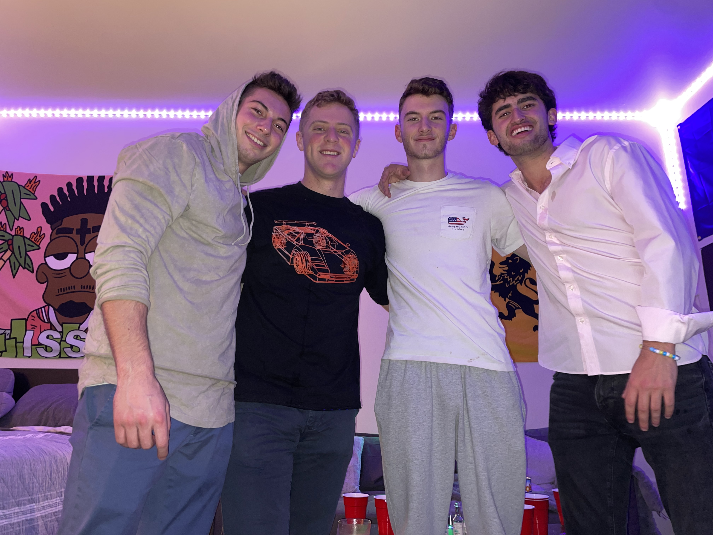
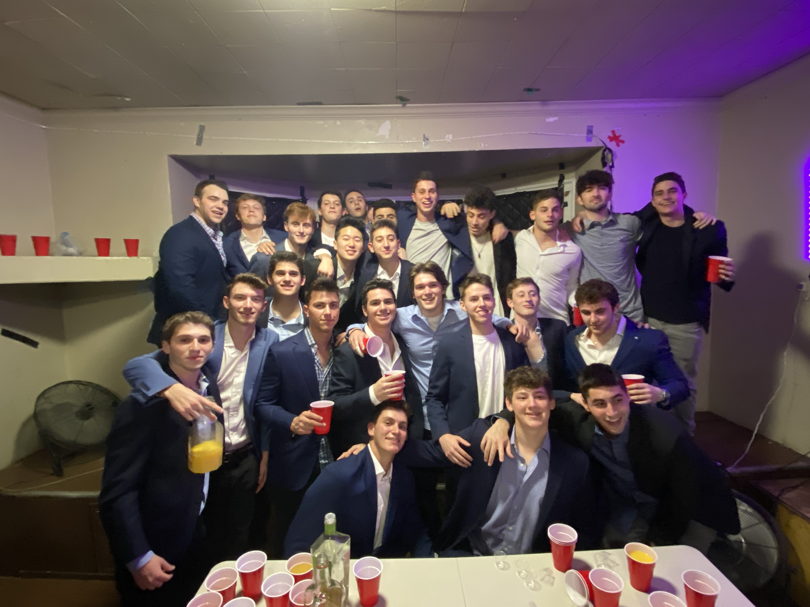
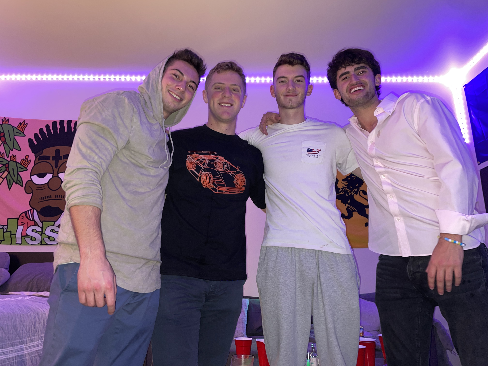
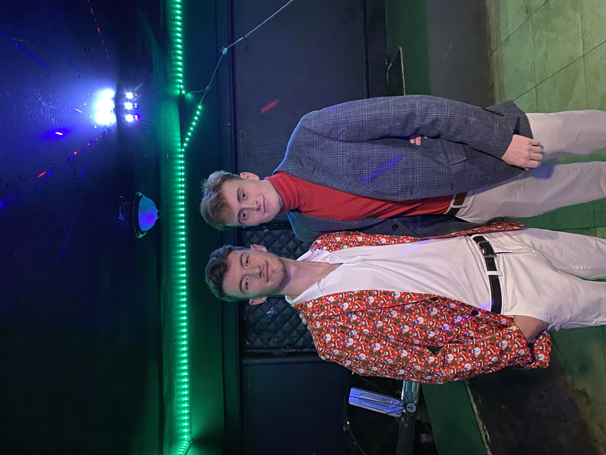
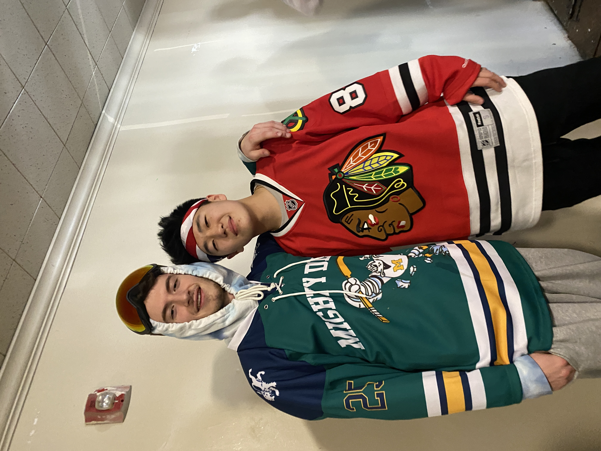
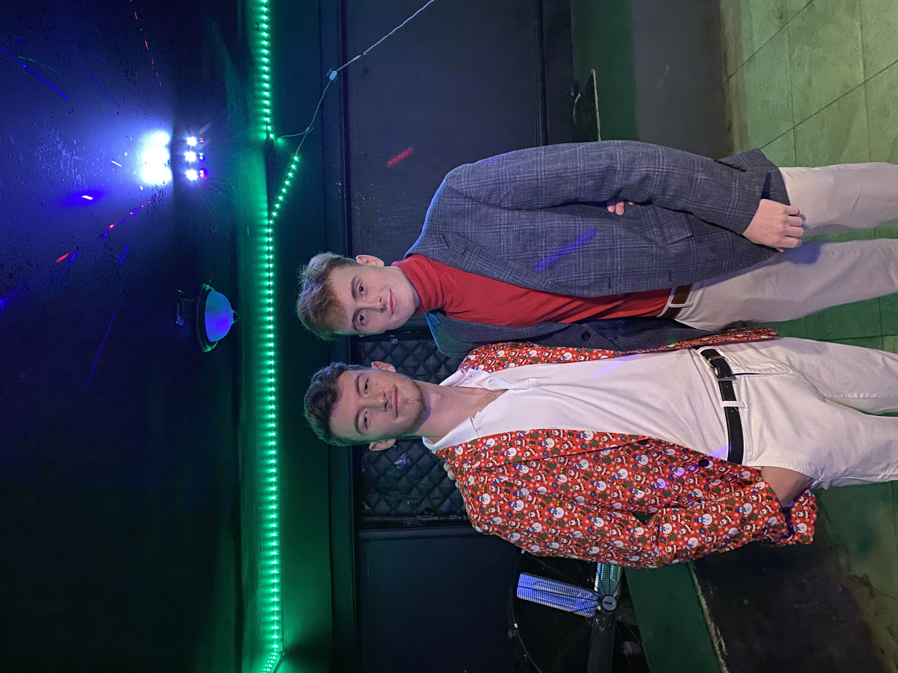
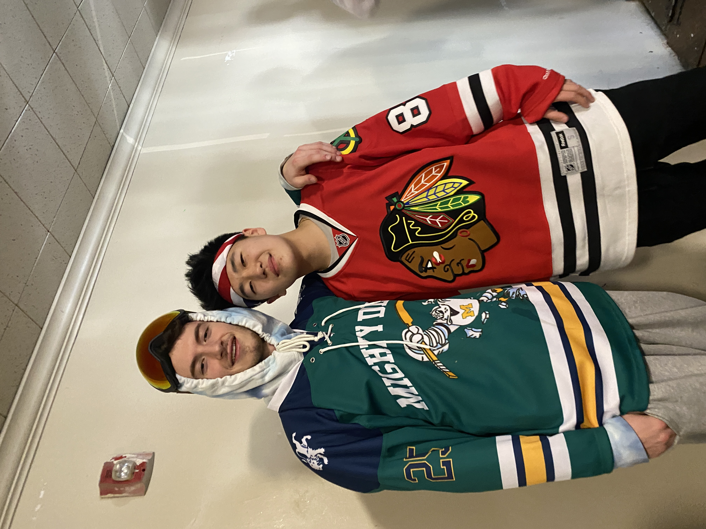

So who is Oliver Fishel? Good question! I am still trying to figure that one out myself... but I am getting there! Anyway, to simply state the facts, I was born in the small town of Ridgefield, Connecticut but moved to Rockland County, New York around the age of two. I grew up living an alternative lifestyle, attending a private school and learning many skills like cooking, gardening, playing insrtuments, and other practical skills not normally taught in public school. However, after my parents divorced after the 2008 housing crash, I moved to public school and was conbfronted with new friends and new teaching methods all at the same time. This all worked out though, as my eduacation throughout public middle school and high school equipped me with the tools to get into U of M and meet some of the best people in my life. Below are some pictures with friends from Michigan who I met over the past two years and formed dynamic connections and memories with. This is just a snippet of what my life is like in Ann Arbor, but I love to golf, I love to eat, and I love to do it all with my brothers of Delta Kappa Epsilon and many others.
 





 



All of these images show a little bit of what my life is like here in Ann Arbor. I love to be with my friends, I love to golf, I love to adventure, and most importantly, I love to eat. However, the food and family section of my webpage is on the next tab. Feel free to check it out to learn more about my family, my passion for skiing, and the amazing foods and cultures I like to immerse myself into through the art of food. So without further ado, let us venture forth into the amazing land of food, family, and fun!